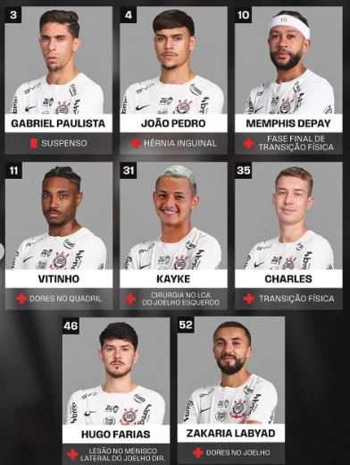

CORINTHIANS · 06 NOV 2026
Corinthians terá desfalques por suspensão contra o Botafogo

O Corinthians precisará reorganizar a equipe para o confronto com o Botafogo. Yuri Alberto, Matheus Pereira e André Ramalho aparecem entre os jogadores suspensos para a próxima partida.
Com baixas em setores diferentes, a comissão técnica terá de avaliar alternativas no elenco. A definição dos substitutos depende dos treinos e da escalação oficial. A Fiel aguarda a preparação para o próximo compromisso.